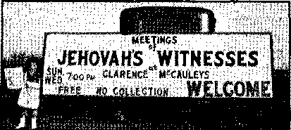
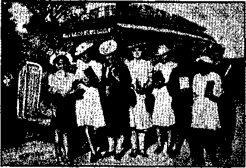
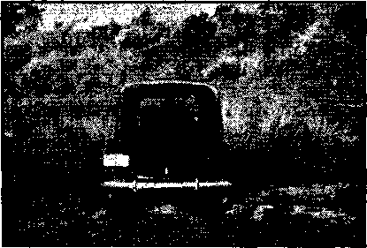
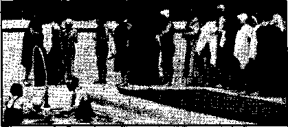

Americanism versus Catholicism
Revival of the Old Spanish Empire
Rocky Mountain and Pacific Coast States
Counsel by J. F. Rutherford
Forevision of German Invasion of Russia
The New Government
More About St. Louis Convention
The Devil “Having Great Wrath”
“Lovers of Pleasures”—2 Timothy 3:4
British Comment
Published every other Wednesday by
WATCHTOWER BIBLE AND TRACT SOCIETY, INC.
117 Adams St., Brooklyn, N. Y., U. S. A.
Editor Clayton J. Woodworth
Business Manager Nathan H. Knorr
Five Cents a Copy
$1 a year In the United States
11.25 to Canada and all other countries
NOTICE TO SUBSCRIBERS
Remittances: For your own safety, remit by postal or express money order. When coin or currency is lost in the ordinary mails, there is no redress. Remittances from countries other than those named below may be made to the Brooklyn office, but only by International postal money order.
Receipt of a new or renewal subscription will be acknowledged only when requested. Notice of Expiration Is sent with the journal one month before subscription expires. Please renew promptly to avoid loss of copies. Send change of address direct to us rather than to the post office. Your request should reach us at least two weeks before the date of issue with which it is to take effect. Send your old as well as the new address. Copies ■will not be forwarded by the post office to your new address unless extra postage is provided by you.
Published also in Afrikaans, Bohemian, Danish, Dutch, Finnish, French, German, Greek, Hungarian. Japanese, Norwegian, Polish, Portuguese, Spanish, Swedish, Ukrainian; also special Australian edition in English.
OFFICES FOR OTHER COUNTRIES
England 34 Craven Terrace. London, W. 2
Canada 40 Irwin Avenue. Toronto 5. Ontario
Australia 7 Beresford Road, Strathfleld. N.S.W. South Africa 623 Boston House, Cape Town
Entered as second-class matter at Brooklyn, N. Y., under the Act of March 3, 1879.
Notanda
Man’s Need of The Theocracy
(From the Valedictory on page 7)
The present extreme conditions are satisfactorily explained in only one way: by recognizing the fact that there have been unseen forces overreaching men and which have augmented the baser instincts of mankind until this generation has witnessed selfishness, greed and hypocrisy go to seed. Today commercial, religious, and political interests are combining to perpetuate this very unsatisfactory condition of things. This is done through propaganda and deceit. And can it be doubted that there is Satanic wisdom back of the deceptions of our day? It must be apparent to every reasoning mind that it will take a higher power, the rule of the Almighty Creator, to remove from this universe the Satanic forces which have been responsible for the prospering of wickedness and to cause right-doing to prosper instead and to cause those who work with unselfish motives to be rewarded. Such a rule, the great Theocracy’, is man’s only hope, and no education now is complete without a knowledge of its principles.
As previously stated, we are entering an age in which unselfish motives only will be rewarded. You ask, How can one learn to work unselfishly? To do that we must know that the Supreme One of the universe, Jehovah, is the complete expression of unselfishness. He never does or says anything for selfish reasons or personal gain. He being the source of all life and everything good, all the creatures in the world could not enrich Him in any way; therefore it is impossible for Him to do anything selfishly. A creature, however, being the recipient of all he has, could learn to do unselfishly only by showing proper gratitude to the great Giver of all good things.
So as we say good-bye to the members of the faculty and to schoolmates and express our appreciation of your efforts in instructing and helping us through our school days, may we leave with you this parting admonition that what one has learned or may’ learn is only of real value if used to the honor of Jehovah’s NAME.
. “And in His name shall the nations hope.”—Matthew 12:21, A.R.V.
Volume XXIII Brooklyn, N. Y., Wednesday, November 12, 1941 Number 678
Education and Instruction
THOUGH similar in meaning, the terms education and instruction show marked differences. Educate is from two Latin words meaning to lead forth or bring out; while the source of instruction has the thought of building in. So instruction has the significance of supplying something, while education suggests the directing or leading of something that already exists, in the sense of training. Both words are used in a variety-of ways, but education generally implies a course of systematic instruction with a more or less definite goal in view. Instruction may be limited to giving orders or directions incident to the performing of some particular task or duty, but may also be used to refer to a course of learning, viewed chiefly from the standpoint of acquiring knowledge. Succinctly stated, then, education may be said to refer to a method of learning to do, and how, while instruction is likely to have the more limited meaning of learning to know, though with a view to doing.
Education has long been appreciated as conducive to the well-being of man. It may greatly enlarge his capacity for doing and obtaining good. Man is endowed by his Creator with a remarkable capacity for observation and reflection, and he therefore readily acquires knowledge as to natural and material things. This process of gaining knowledge may be speeded up and systematized, so that by a settled plan and orderly arrangement of facts not only is knowledge acquired more readily and easily, but higher degrees of knowledge are opened up
NOVEMBER 12, 1941 to the insatiable thirst for knowledge with which man is endowed. By “precept upon precept; line upon line, line upon line; here a little, and there a little”, understanding and knowledge increase by gradual steps.
But while humankind thus have the craving for knowledge deeply implanted within them, they have, since the fall, also acquired a proclivity for evading unpleasant facts and “hard sayings”. They have learned to build up formidable barriers between themselves and the things that would be for their highest good—high things, heavenly things; great things, things of God. They have built up systems of false philosophy, systems of morality, 'systems of "propriety”, so called, and systems of religion, imposing, astounding, intriguing, soothing, inspiring, but utterly vain in the last analysis. "For the wisdom of this world is foolishness with God.”
Dr. William H. Kilpatrick, professor of Education at Teachers College, Columbia University, is on record as saying that the great fault in present-day education is the refusal by educators to teach the child to face reality, that is, to face the facts. Children should be encouraged to ask questions and have the “why” of what they do explained, he told a gathering of teachers “If we coerce a child, he is not learning to face reality. If we bribe a child, he is not learning to face reality.” Not only is this true of present-day education; it has marked education to a greater or less degree since Eve first tasted the fruit of the tree of the knowledge of good and of evil.
3
Accomplishments
It is not to be concluded that all education has been futile. Much has been done to equip humankind for the everyday things of life and for tasting more deeply the springs of knowledge. Educators in every age have sought to give others opportunity to enlarge their world by an appreciation of its many wonders.
In America such names as Horace Mann, Alexander Woolcott and William Holmes McGuffey stand out prominently as having contributed much to the improving of the means and methods of education. At the head of the school interests of Massachusetts for twelve years, Horace Mann’s annual reports stand out as among the greatest educational treatises in the history of America. His Fifth Report was widely circulated outside of Massachusetts and by special vote the British Parliament reprinted a large part of the Seventh Report. Both were translated and widely circulated in Germany. McGuffey readers have had a wide influence, and have even been translated into Japanese, among many other languages. It is estimated that over 100,000,000 copies of these readers have been sold. Woolcott’s readers have likewise been widely used.
In those days the school children were not ignorant as to the importance and order of the Ten Commandments, which were included in poetic form in one of the readers. Many other selections from and references to the Bible were likewise used. These have gradually been eliminated, so that now Rome can refer to America’s schools as “Godless”.
While in the nineteenth century the children had an opportunity to appreciate the Commandments of God, university students today “lightly esteem” them. At the University of Wisconsin Jehovah’s Ten Commandments were presented to an advanced class of students, and it is significant that these misguided men and women listed as of first importance the six commandments that have to do with the relations of humans with one another, and of secondary importance the four commandments which have to do with man’s relation to God. The commandment which the Creator placed first (and which a logical mind would place first) they placed seventh on the list.
Religion in the Schools
In an address at Institute, West Virginia, the State superintendent of schools, W. W. Trent, stated that “history is replete with illustrations to prove that nations that depart from principles of religion pass through periods of corruption, disintegration and destruction”. The philosophy of this remark is that the Mohammedans should continue to practice Mohammedanism, the Hindus to practice Buddhism, the Chinese to practice Confucianism, and the Japanese keep right on worshiping their 8,000,000 deities, a la Shinto. Seems a bit silly, doesn’t it, and as if he needed to know what religion really is—the teachings, traditions and practices of creatures, instead of obedience to the instruction of the Creator?
Yet educators and others like to use the ambiguous method in dealing with the subject of religion. After examination of an eleven-year-old child who had killed her mother a psychiatrist remarked that while the child was a member of a church-going family, she had lacked “religion”, saying, “This child’s mind seems closed to religion. Parents should take warning from that fact. The best safeguard against tragic incidents of this kind is a sound instruction in the fundamentals of religion.” The gentleman overlooks the fact that crime is more frequently found among those who have had religious upbringing than among others.
It is a well-known fact that there are far more Roman Catholic-(educated) criminals, in proportion to population, than of any other group. The churches play an important part in the educational
CONSOLATION
program, and it does not speak well for this most boastful religio-educational system that so many of its products turn out so badly. Catholics make up one-ninth of America’s adult population; they supply nearly a third of the country’s criminals!
It is not the prerogative of the schoolteacher to influence the child’s thinking. The schools are a means of enabling children to get at facts, so that these facts may enable them to deal with the problems of life as they arise. The teacher must be objective and impartial in the presentation of the simple facts. Textbooks, likewise, should not unduly influence a child’s mind. The following is an extract serving as an example of such improper influence. “The Russian Revolution aims to effect a complete transformation of society—-the establishment of a Communist economic regime and the acceptance of a Communist philosophy of life. This is why it is, of all the events of our time, the most interesting and perhaps the most important.” The last sentence in this extract from a school textbook is by way of comment on the preceding statement, and tends to favorably impress the mind of the child with reference to Communism.
Commenting on this quotation, Geo. E. Sokolsky, a writer in Liberty magazine, says, “Is it more important, for instance, than our own efforts to maintain a democracy in the face of world pressure? Is it more interesting than the fact that in the United States 130,000,000 people are surviving a ten-year depression without revolution . . . ?”
He further presents the interesting queries: “Does anyone happen to have told your child that nowhere on the face of the earth, even after ten years of depression in this country, is the standard of living of the average family as high as ours?”
“Does he know that food and clothing -are more expensive in Soviet Russia and that wages are lower than in the United
NOVEMBER 12, 1941
States? Does he know that that is also true in Germany? ...”
“The fundamental task of protecting the child from [improper influence] is up to the parent. Ask your child:
1. What role did the Bible play in the forming of American ideals at the beginning of American history? If the youngster does not know, find out why.
2. Ask your child whether it is true that no principle other than the class struggle motivated American life. If the child believes that, find out why.”
The same writer points out that in many schools work is made so easy that lacy and indifferent children can get by, thus teaching the more industrious children that conscientious effort doesn’t get one anywhere.
The honor system formerly in force in many schools of higher learning was based upon the supposition that every student was honest, or at least the majority were. Hence supervision of examinations was eliminated and the students were put on their own honor. The tendency in recent years has been to return to the proctor system, in many cases at the request of the majority of the students, and examinations are supervised to prevent the cheating which had become very prevalent, and which the students themselves, as a body, seemed not to have the courage to correct. The students, collectively, were to see to it that no one cheated, and if anyone did, he was to be reported to the student organization which would procure the permanent removal of the offender. Apparently the honor system broke down because there was not enough moral stamina among the pupils.
President Wilson once said something to the effect that he was amazed to see the lengths to which young men would go and the effort they would put forth to avoid the acquisition of knowledge. The painful process of thinking (or is it the art of thinking?) is something that few pupils seem to go for, and many are only too ready to reject with superior sophistication sentiments like the following :
“Think
“It’s a little thing to do, just to think. Anyone, no matter who, ought to think. Take a little time each day from the minutes thrown away—spare it from your work and play—stop and think! You will find that men who fail do not think. Men who find themselves in jail do not think. Half the trouble that we see, trouble brewed for you and me, probably would never be if we’d think! Shall we journey hit-or-miss, or shall we think? Let’s not go along by guess, but rather ^o ourselves confess it would help us more or less if we’d think!”
While religion should not be taught in the schools, for reasons already mentioned, pupils who are courageous enough to make the effort certainly have the right to write themes on things they believe. Such discussions, while highly dangerous to religion, would, if impartially conducted, prove most beneficial.
In a Nebraska high school the principal gave a talk on saluting the flag. He said that those who did not want to salute the United States flag had no right to five in the country. Grace brought the principal a booklet the next day. It was entitled Loyalty. She told him that, since there were two sides to everything, she would like him to read the booklet’s explanation why a true follower of Jesus Christ would not salute the flag. Thereafter there were discussions among the pupils as well as the teachers. Grace was questioned by all of them, and used the opportunity to witness to both pupils and teachers that she put Jehovah God first. In one class about fifty pupils were given a witness, and at the request of a teacher another class of about twenty pupils were witnessed to.
When a patriotic program was given on Washington’s Birthday, Grace showed her faith by not saluting or taking part. The principal, knowing why she did not wish to participate, looked on half-smiling.
On another occasion the science teacher had a discussion on the forming of minerals in the earth, particularly coal, which he said was formed by decayed animal and vegetable matter. Grace mentioned that many minerals were deposited by the falling of various rings suspended about the earth (as now about Saturn) in the period of its formation, according to a book by Judge Rutherford called 'Creation. The science teacher was interested, and was given the book to read. After about six weeks he returned it, saying he had read not only the chapter about the ring canopies, but also other matters.
Another teacher heard the lecture '“Government and Peace” run on Grace’s phonograph, and obtained from her some of Judge Rutherford’s books.
Grace is getting along with both faculty and pupils, but has not hesitated to take a firm stand for The Theocracy.
At another high school, in another state, one of Jehovah’s witnesses graduated, and having the highest grade, was called upon to make the valedictory address. She selected an article that was not merely a collection of platitudes, ,but pointed definite truths, and included a witness to the supremacy of Jehovah God. She was preceded on the program by a judge of the district who pointed out the advantages of democracy in which everyone could serve God according to the dictates of his heart. Then Jean gave her address, while the judge and two preachers sat on the rostrum behind her. The school auditorium was packed, and all listened as Jean ascribed greatness to her Maker in the following words:
Friends and Classmates:
The onward-winging flight of time has brought us to the terminal where we must recheck and start out on new and untried roads. Old Mother High School has written “Finis” upon our pages and is sending us forth to prove the worth of her endowments. Our high school days are finished, yet they shall be ever present; we are carrying them with us, not only impressed upon our memory, but a very part of us mentally, morally and physically. On into the long years of the future this school training shall form an important part in our experiences and achievements. The opportunities of the classroom have passed, but the opportunity for making the most of what we have acquired in school is just beginning. What we are observing today is known as “Commencement Exercises”, and that suggests to our minds that what we have just completed'is really not our education, but rather a basis for our education.
To properly understand life’s problems and to derive the most good from the experiences of life we need to know bow to apply what we have learned. Furthermore, the present generation is confronted with new and difficult problems, as evidenced' by expressions from some of the world’s greatest statesmen, such as these: “We are at the turning point of the ages”; “The present trouble upon the world is an epoch-making one”; “Management of earth’s affairs is beyond human control.” To the properly instructed mind it is apparent that we are entering an age in which the motive back of our deeds is becoming more manifest. Therefore, if in analyzing this subject we can find a few points that will enable us all to derive the greatest benefit from life’s experiences, as well as from the things we have learned during our school days, we shall be well rewarded for our efforts.
[For the concluding words of this valedictory, see ‘Txotanda”, on page 2.—Ed.]
Other youthful witnesses for Jehovah have testified to their faith and devotion before teachers and classmates by writing themes dealing with the purposes of the Almighty. The course of action followed by these conscientious students of “reading, writing, arithmetic” and Scripture shows that instruction at home must supplement education at school, or rather, right instruction at home makes supplementary education at schools effective for the upbringing of good citizens and honest witnesses.
It is inevitable that school life must at times present situations that call for ini dependent action. The child that goes along with everything that is done without thought or question may be the ideal of some teachers, but other and wiser teachers will not fail to appreciate the courage and sincerity of the pupil who, conscientiously, will sometimes stand apart from the crowd and insist upon recognition of his right to be an individual. Children must be neither bribed nor coerced. Nor will the smooth course of school routine be seriously threatened if a child is sometimes excused from participating in merely incidental activities.
The parent is the natural and therefore the divinely appointed guardian and instructor of the child. Nor may the State through the school ignore or outrage the parent’s undoubted interest in the child’s instruction. Schools have no right, for instance, to teach as proved facts mere theories. The theory of evolution may be cited as an example. When such things are taught in the schools they must be counterbalanced by other concepts, as that of creation, as representing the other side. The preferable course would be to omit such speculative matter altogether, leaving it for the graduate to consider when the school has equipped him by giving him the fundamental qualifications of reading, writing, trained reasoning. Perhaps the most valuable training a school could give a child would be the ability to impartially consider facts, or even theories, and to tolerantly give ear to the views of others on any and all subjects, while yet not being too ready to give up an honestly held personal view.
In recent years pupils who refrain from saluting flags in schoolrooms have come to public notice. Such pupils invariably have an intelligent appreciation of the significance of the gesture, instruction at home having given them an understanding of that which many pupils perform without thought or comprehension. The value of the formal or routine salute has been widely questioned by thoughtful writers, while the obvious viciousness of forcing a salute has been roundly condemned.
NOVEMBER 12, 1941
Kenneth Porter, professor of History in Vassar College, observes: “It is, after all, possible to do one’s duty as a citizen without ever saluting the flag which to most of us symbolizes our country, just as Protestants are able to love and worship God without the use of crucifixes, images of the saints, and other symbolical ‘aids to worship’.”
There is no reason why a child’s conscientious scruples in this or in other matters should be overridden. Why, by way of another example, should a child be forced to memorize a poem or selection of any kind that is distasteful to him for some reason, or which he may find objectionable on conscientious grounds 1 Why shouldn’t he be permitted to make his own selection, whether of poetic or of prose writing? Or, to put it more pointedly, what right has the teacher to ignore a child’s proper preferences? That wisdom is required in dealing with this matter is obvious. A child cannot be permitted to neglect those elements which are essentials of education. Proper discipline in that connection, together with the backing of parental authority, will prevent trouble here.
The great difficulty here, as in other fields of human activity, is the tendency to carry things to an extreme, playing one end against the other, or ignoring one altogether. That there must be discipline in schools, that children cannot be allowed to determine for themselves what they will or will not do, is (within reasonable limits) acknowledged. That they must, nevertheless, be treated as individuals, and their honest scruples and dislikes regarded, while they are helped to face reality honestly and courageously, is also important. Educators in schools, co-operating with parents, must continue to seek for the properly balanced method. Much progress has been made. More is still to be made.
But at no time may a child be coerced into doing that which it honestly believes to be wrong and contrary to the law of God. This one thing cannot be overlooked with impunity; for the fear of the Lord is the beginning of knowledge and wisdom. Without it education is vanity.
Pioneering Among the Mormons
♦ Modena, Utah, is a Mormon town and was visited thoroughly. There were several Watchtower subscriptions taken and much literature was left. One lady, upon receiving the witness, declined to take the book Salvation. I suggested that I leave a copy for her to show to her husband when he came home, and I would call the next day. On calling, she was glad to see me and said she had read the book through, also Refugees and a sample Watchtower. She wants the whole set now, and is coming along fine.
I met some who gave permission to use the old schoolhouse for the “Government and Peace” lecture. We made personal calls on all the town (around 75) and asked them over. Lo, there were 28 who came in and heard! Many expressed a desire to hear “Fascism or Freedom” next week. The meetings are going to continue, and many who are of good-will toward God are manifesting themselves.
Kanarraville is another Mormon village of about 300 people. We took two subscriptions and will have free use of their “Relief Society Hall” on Monday evening for the “Government and Peace” series. The Mormon bishop announced the meeting in his church, and we expect most of the town. My mother and I were even invited to dinner by the wife of the bishop. She asked many questions and got her Bible and wrote the scriptures down.
In two weeks we have taken over 24 Watchtower subscriptions here and placed over 100 books. Our listeners are over the top! We all say “Aye 1” to Judge Rutherford’s letter pointing to the pioneer field for the real joy.—David J. Longfellow, Utah.
Americanism versus Catholicism
♦ 1. Separation of Church and State. Americanism’s attitude on this vital subject is expressed in our Constitution, thus: “Congress shall make no law . . . respecting an establishment of religion ..." That means, in plain speech, that there shall be no official State religion. Roman Catholicism rejects this idea as dangerous heresy. My authority is Pope Leo XIII (Great Encyclical Letters, pages 148 and 323),.as follows:
Hence follows the fatal theory of the separation of church and state. But the absurdity of such a position is manifest ... It would be very erroneous to draw the conclusion that in America is to be sought the most desirable status of the Roman Catholic church, or that it would be universally lawful or expedient for state and church to be, as in America, dissevered and divorced.
Thus speaks the infallible [?] pope. As the pope was discussing this great question officially, his words must be accepted as authoritative; and they are, in every syllable, opposed to the U. S. Constitution,
2. Freedom of Conscience. Americanism (here the Constitution speaks again) holds: “Congress shall make no law . . . abridging the free exercise" of religion. This means any American has the constitutional right to accept any form of religious worship or reject all religion. But what does Roman Catholicism say on this grave issue ? Here again I quote from Pope Leo XIH’s encyclicals referred to above. The words below clearly deny the right to select any form of religion or reject all religions:
Let us examine that liberty in individuals, which is so opposed to the virtue of religion, namely, the liberty of worship, as it is called.
NOVEMBER 12, 1941
This is based upon the principle that every man is free to profess, as he may choose, any religion or none . . . This is no liberty, but its degradation.
3. Free Speech and Press. Americanism (through the U. S. Constitution) says: “Congress shall make no law abridging freedom of speech or of the press.” And here’s Catholicism’s answer (again taken from Pope Leo’s encyclicals referred to above):
“The unrestricted freedom of thinking and of openly making known one’s thoughts is not inherent in the rights of citizens."—Pope Gregory XVI. We must now consider briefly liberty of speech and liberty of the press. It is hardly necessary to say that there can be no such right as this.
4. Democratic Government. Lincoln, in his Gettysburg address, expressed the principle in this way: “We here highly resolve . . . that this nation . . . shall have a new birth of freedom . . . and that government of the people, by the people, for the people, shall not perish from the earth.” Again I quote from Pope Leo XIH’s Great Encyclical Letters (pages 120-122):
Amongst these principles, the main one lays it down that as all men are alike by race and nature, so in like manner all are equal in the control of their life; that each is free to think on every subject just as he may choose; that no man has any right to rule over other men. In a society grounded upon such maxims, all government is nothing more nor less than the will of the people, and the people, being under the power of itself alone, is alone its own ruler . . . Now, natural reason itself proves convincingly that such concepts of a State are wholly at variance with the truth.
5. Undivided Allegiance to the U. 8. Americanism holds that the Stars and Stripes cannot be honored if one gives at least a portion of his allegiance to the Vatican State, a foreign political power. The pledge to the flag calls for undivided allegiance. But Pope Leo XIII, in page 304 of the Great Encyclical Letters, holds otherwise. The [Roman Catholic]
9
Church insists that, the pope is above all governments in matters pertaining to religion and morals. The pope has his own flag. Leo XI II said: "We (thepope) hold upon this earth the place of God Almighty.15 ■
6. Education Free of Sectarian Control. Americanism holds that the public school system is one of the foundationstones of our democracy. It must be nonsectarian if it5s to be free. But Roman Catholicism rejects this principle. Here we turn to Divini Illius Magistri, Encyclical on Education, issued in 1931, from which I quote:
“Education outside the Roman Catholic church is a condemned heresy . . . The public school, open to all children, should be under the control of the Roman Catholic church.” —Pope Pius IX, “Syllabus of>. Errors.” “The mission of the Catholic, church to educate embraces every nation without exception, and al] men, within or without her membership, and there is no power on earth that may lawfully oppose her or stand in her way.”
There is the record, in plain, blunt speech. It proves beyond debate that Americanism and Catholicism are enemies.—The American Freeman, January, 1941.
Canon Law of the Pope
♦ “I.—All human power is from evil, and must therefore be standing under the pope.
“II.—The temporal powers must act unconditionally of the spiritual.
“III.—The ‘Church’ is empowered to grant or to take away any temporal provision.
“IV.—The pope has the right to give countries and nations which are nonRoman Catholic to Roman Catholic regents, who can reduce them to slavery.
“V.—The pope can make slaves of those Christian subjects whose prince or ruling power is interdicted by the pope,
“VI.—The laws of the ‘Church,3 concerning the liberty of the ‘Church3 and the Papal power, are based upon divine inspiration.
"VIL—-The ‘Church’ has the right to practice the unconditional censure of books.
“VIII.—The pope has the right to annul state laws, treaties, constitutions, etc.; to absolve from obedience thereto, as soon as they seem detrimental to the rights of the ‘church,’ or those of the clergy.
“IX.—The pope possesses the right of admonishing and, if need be, of punishing the temporal rulers, emperors and kings, as well as of drawing before the spiritual forum any.case in which a mortal sin occurs.
“X.-=Without the consent of the pope no tax or rate of any kind can be levied upon a clergyman, or upon any church whatsoever. '
“XI.—The pope has the right to absolve from oaths and obedience to the persons and the laws of the princes w’hom he excommunicates.
“XII.—The pope can annul all legal relations of those in ban, especially their marriages.
“XIII.—The pope can release from every obligation, oath, vow or, either before or after being made.
“XIV.—The execution of papal commands for the persecution of heretics causes remission of sins.
“XV.—He who kills one that is excommunicated is no murderer in a legal sense.”—Ulster Protestant, December, 1940.
German Catholics Shame French Ones
♦ The West Virginia edition of The Register reiterates the popular fairy stories about the “dreadful ordeal” the “Church” is having in Europe (most of which is imaginary) and then straightens up smilirtgly to say: “But side by side with stories about the alienation of youth from the Church by the Nazi officials of Germany come reports that German soldiers are shaming the French people by their attendance at the Catholic churches in occupied France.”
The Wicked Partnership
♦ On November 26,1940,1 heard Wythe Williams, the newscaster on Station WOK, state that the Belgian King Leopold was soon to be sent to the Vatican by Hitler to offer the pope the spiritual leadership even as Hitler is the political head of all Europe. On the following Tuesday evening, also at 8 p.m., he restated and confirmed this and explained that the usual way is for it to be done in secret. If all went well it would later be headlined, or if without success, no one would ever hear of it.
On the evening of March 11,1941, at 8, Mr, Williams said: “As reported in my former broadcasts, Hitler has contacted the Vatican, but the diplomats there say that a treaty or concordat at the present time would be only a scrap of paper; that first the differences between the Catholic Church and the Hitler government should be ironed out. i
"It is reported now that while Protestant ministers cannot buy gasoline nor travel even in their own parishes, Catholic priests can go into remote sections, and even into Poland and other occupied countries where no one else is allowed to travel; also, as the following Associated Press dispatch reveals [Detroit Free Press, March 8, 1941], 50 motorized churches are now at the disposal of the priests to reach outlying points.”
Catholic clergymen are taking religion to the German people by means of especially built automobiles equipped with altars. Notwithstanding the nation’s gasoline economy measures, German authorities approved the plan because the motorized churches are intended to serve scattered garrisons and isolated hamlets. The priests do their own chauf-feuring.
—Robert Hatzfeldt, New York.
The Crusade Against Christians
♦ In southern Prance there were many adherents of both the Albigensians and the Waldensians, especially in the county of Toulouse. At the beginning of the thirteenth century there was in this region
NOVEMBER 12, 1941 an open contempt for the Church, and bold heretical murmurings were heard even among the higher classes.
Against the people of this flourishing land Pope Innocent III preached a crusade in 1208. An army marched from northern France into the doomed region and, after one of the most atrocious and bloody wars upon record, suppressed the heresy by wholesale slaughter. At the same time, the war checked the civilization and destroyed the prosperity of the most enlightened portion of France.
The most permanent defense of the Church against heresy was the establishment, under the headship of the pope, of a system of courts designed to ferret out secret cases of unbelief and bring the offenders to punishment. These courts which devoted their whole attention to the discovery and conviction of heretics were called the Holy Inquisition, which gradually took form after the Albigensian crusade. The unfairness of the trials and the cruel treatment to which those suspected of heresy were subjected, through long imprisonment or torture— inflicted with the hope of forcing them to confess their crime or to implicate others —have rendered the name of the Inquisition infamous.—The Story of Our Civilization, Vol. 1, page 160.
Standing by Hitler .
♦ In The American Scholar, in the winter of 1940-41, George N. Shuster had an article entitled “The Conflict. Among Catholics”. The article was condensed and reprinted in the Contemporary Jewish Record in February, 1941. The following selections from the condensation show how the Catholic people are being dragged along by the nose by the ones that are in league with Hitler:
Catholic men and women who had offered heroic resistance to Hitler were suddenly astonished to find their ecclesiastical superiors not merely eager to compromise but actually willing to believe Nazism a benign affair. The members of the Catholic majority in the legislative assembly of one federal state were
i
startled to behold, as they were marched out of jail by their Nazi captors, their archbishop riding down the street in an automobile festooned with swastikas and giving the Nazi salute.
Thus, when an attempt was made to stop American participation in the Berlin Olympic Games, the anti-Hitler forces failed to carry the day because Catholic support was withdrawn at the critical moment. A few prominent pro-Nazis gained the victory.
Revival of the Old Spanish Empire
♦ Nazi propaganda is based on the cultural and historical prejudices of the people and is directed at the masses. During the last few months it has been taken over by the Spanish Falangistas, who are preaching a revival of the old Spanish Empire. They are using such movements as Accion National and Sinarquismo to spread their doctrines.
Sinarquismo is made to order for Falangista intrigue. It is a Catholic movement. Former priests and nuns act as its agents. It is strongest among the peasants of Jalisco, Michoacan and Queretaro, where the Cristero movement was born. It preaches blind obedience to the church and leaders, acceptance of one’s lot in this world, servitude for the poor and charity for the rich, the superiority of Spanish culture and the Spanish race, which must be accepted also by the faithful even though they may be Indian. It is a movement based on religious fanaticism. It is one of those which will fall into the reactionary front and at the proper time will be corrupted to serve Nazi ends. '
The Nazis’ objective is to induce United States intervention in Mexico. If they are successful, the rewards will be high. It will mean the complete breakdown of the Pan-American front. Obviously the best attack can be made through the Spanish Falange. In middle-class homes in Mexico it is not uncommon to find a picture of Generalissimo Franco hanging side by side that of the Virgin and candles burning beneath both of them.
Franco is represented as the savior of Christianity and civilization.—Dr. Vincenzo Petrullo, in New York Times, February 9,1941. '
French Teachers Have Backs Up
♦ It isn’t so easy to entirely stifle liberty in France. The teachers’ committees are virtual trade unions. When Pacelli and Hitler seized the country it was at first thought that even in Unoccupied France all would be smooth sailing, old Mr. Petain would see that the teachers’ committees were disbanded, the priests and nuns would move in to the schools and heads would be in and brains would be out. And now, all ye who want a good laugh, read these sad words from the London Catholic Times published only eight months after the loud crowing of August 1, 1940: ■
The Catholic Church in France hailed the new measures as a princely gift from the new government. Alas, the gift has been taken back. The reform of France is no simple or easy matter. M. Chevalier is no longer Minister of Education, and his successor, M. Carcopino, has reversed his decrees. Religion is again to be taught outside the schools. Catholies all over the world, who had hoped for great things from the new regime, will be disappointed. This education has become a sort of “test case”; if the decree remains in force, not only will there be grave disappointment among Catholics, but France can never return to her ancient glories.
Hitler and the Catholic Church
♦ Hitler himself—who was born of Catholic parents—continues to call himself a Catholic, and is recognized as such by the Catholic Church, which never excommunicated him. Hitler’s Totalitarianism is in strict harmony with the ideology of the Catholic Church. His Gestapo is nothing more than a streamlined version of the Church’s Inquisition, an institution which I’ve shown the Church hopes to re-establish when circumstances permit. Totalitarianism is Catholicism expressed in political terms.
As for von Papen, Hitler’s ambassador to Turkey and the politician who more than anyone else was responsible for Hitler’s theft of power in January, 1933, he speaks of his leader’s regime, as follows:
“The third Reich is the first power which not only recognizes, but which puts into practice the high principles of the Papacy.”
Catholic-Fascism has had its points of difference with Hitler, but fundamentally both are the same.—The American Freeman, June, 1941.
Praying for Peace '
♦ The pope says that when you pray for peace ‘like he tells you to pray, the result is 500 days’ indulgence for the victims in “purgatory”. The prayer contains the request that Jesus’ blood will descend on the bombed sufferers. That figure of speech is absolutely meaningless. There is another request that a peace of concord and justice among nations may be restored. With bishops of Germany praying for German success, Italian bishops praying for Italian success, and British bishops praying for British success, there is a fat chance, is there not? Then the prayer says that Jesus wants peace. How does the pope know He does ? He has all power in heaven and in earth and could get peace in ten seconds by an earthquake that would obliterate every fighter in the world. And then the pope prays for justice and charity on both sides, and in perfect balance, with “the reign of right restored”. There has been no such reign of right in the earth at any time in the past 6,000 years, as the pope and everybody else knows full well. ’
La. ‘
To Mr. J. F. Rutherford.
Dear Sir:
Please excuse me, as I do not know how to address you. I have accidentally come across three of your books, Harp
NOVEMBER 12, 1941 of God, Vindication and Preparation, and I am so truly interested that I want to hear and know more. You see, I am a born Catholic and all my life the Word of our Lord has been given to me as the priests have so decided. For several years I have been confused, worried and anxious to read and know more about our Lord. I do so enjoy your books and I feel so at peace while I’m reading and studying them.
Will you please send me some more literature or some word that will help me understand? I have bought me a Bible, and I love it so. Of course, my friends and priests will say I’m crazy, and try to get me to destroy them if they know of it; but I promise you truly to read and study everything you send me. It seems like I am in a fog, just coming out of a dark forest into a beautiful light when I’m reading the Bible or One of your books. ,
Please help me to understand. I feel I’ve been wrong all my life. I’ll send some money on the 20th of this month, as I get my salary on the 5th and 20th respectively. You see I don’t know what you charge to pray for me or help me. I have at last come to the conclusion (since reading your books) that my priest is entirely wrong. He says I’m not ever to read the Bible as I could not interpret it without his guidance; but I know better, because I’ve been reading it on the sly since I’ve found your books, and his version is not at all like the Bible.
Will you tell me what to read, and how can I pray for myself and receive response from our Lord? Please help me. I’ll send you all the money I can the next 20th of October. How much will you charge me to pray for me? I thank you ahead of time, for I feel like you will help me.
God bless you ever.
Sincerely,
A Catholic.
(To be continued) .
Growers Get the Worst of It
♦ A long-time resident of Florida explains that no matter how large or how small the cron the railroads get a fixed price per box for handling the fruit, the packers get their regular fee, the commission men get their regular commissions, and the only people in the line who cannot be sure that they will get anything at all are the growers. He thinks the earnings should all be pooled, but that would mean a recurrence of the rebate frauds which stirred the United States mightily a half century ago, and the complete smashing of the Interstate Commerce Commission carefully built up to put an end to such frauds in favor of the strong and against the weak. Railroads now are compelled to treat everybody alike. .
Busy Days for Ships
♦ These are busy days for ships. Britain’s biggest and best passenger boats are busy carrying Australasian troops to Egypt and' are loaded to the gunwales with Italians on the return trip, men that are glad as prisoners to be fed better than they were when fighting Mussolini’s battles in Libya. Uncle. Sam is busy building all kinds of watercraft, and has at Card erock, Maryland, in its 1,300-foot tunnel of ships, the largest naval testing laboratory in the world. The performance of every model of ship and seaplane is studied with extreme care. The fate of a nation may hinge upon the superiority of its design over one less suitable.
Great Lakes on the Seaboard
♦ Four years from now, if nothing happens in the meantime, all the cities on the Great Lakes will be virtual seaports on the ocean front for six months in the year. It is predicted that the channels contemplated, 27 feet deep, will lead to an immense development of sliipbuilding in these sheltered inland waters.
Enterprising Advertising
♦ That was quite a piece of enterprising advertising by the Timken Roller Bearing Company to buy a $100,000 steam locomotive, fit it with Timken bearings, and send it all over the country visiting prospective railroad customers. The best of it is that the advertising man who hit on the idea picked a winner. Today 91 percent of all new locomotives being built in the United States are being equipped with roller bearings and the Timken Roller Bearing Company gets most of the business, and all because it was clever enough to select a novel, expensive but efficient method of convincing its future purchasers that it knew what it was about.
The Big Railway Pension Business
♦ The fifth-largest insurance business in the United States is that of the Railroad Retirement Board. Only the Metropolitan, Equitable, Prudential and New York Life insurance companies pay out more to their policyholders than the Board pays out in annuities and other benefits. Expenses are kept down, with the result that the expenses of the New York Life are 800 percent greater than those of the Board although the insurance company paid out to policyholders only 40 percent more dollars than the Board paid out in benefits and annuities.
Tickets by Rail and by Air
♦ It is now possible to obtain tickets good one way by rail and the other way by air. These tickets are between Boston and the Maine cities of Portland, Lewiston, Augusta, Waterville, and Bangor. It suits the habits of Boston businessmen to leave for Maine late Fridav afternoon and return by sleeper Sunday night.
Many Americans will be interested to know that the whole of Siberia is now covered by air lines.
The State Guard
♦ The American Legion “demands” that the governor immediately organize and equip a “state guard” to take the place of the national guard that is now in training camp. It is authoritatively stated that it would cost about $150,000 to partially equip 2,000 men as such a “guard”, and nobody has yet pointed out any necessity for such an organization. Governor Sprague says there is no need for it, and suggests that it would be much cheaper, if any emergency arose, to add additional men to the state police. He is right, and such a force would be more effective than the one demanded by the Legion bill which has been introduced in the legislature.
The bill provides that the “guard” shall be equipped with clothing, pup tents, blankets and eating utensils. What for? Is it proposed to put them'in camp or barracks and maintain them there as a little state standing army? If so, for what purpose? Whom do they intend to attack? If, as is claimed, they are to take the place of the national guard, they could stay at home and attend to their civilian duties, being subject to call by the governor only when needed—and nobody can remember when that has ever happened in Oregon. There is grave suspicion that the intention is not to organize something to temporarily take the place of the national guard, but rather to take advantage of the absence of the national guard to organize and equip an organization with official authority to raise hell—a militarized goon brigade— not a “guard” at all, but a trouble-maker and inciter.
It may be all right for Oregon to have a “state guard”—but let’s be sure it is the right kind. There are elements of our population which are fairly itching to secure authority to manhandle other elements without being penalized. They would institute a reign of terror; and
NOVEMBER 12, 1941 that is the opening wedge for Fascism. Maybe that is what they seek.—Salem (Oreg.) Capital Press.
Not Interested in Minority Rights
♦ At Flagstaff, Arizona, Sheriff Art Vandevier explained that he is not the least bit interested in the rights of minorities, and that the oath which he took to uphold the law had no meaning whatever, either to him or to the American Legion, He believes in chasing Americans out of town if they do not believe just as he thinks they should. That, in substance, is the gist of a story in the Coconino Sun. Flagstaff must be proud of its sheriff. The Sun explains also that the commander of The American Legion at Williams, Arizona, is also an anarchist, willing to do what he can and all he can to make this country like Germany. These are not its words, but that is what the words mean.
Reading about the strutting “patriots” in Flagstaff and Williams it is perhaps but natural that the school children at Bisbee, in the same state, ganged up on all the cars that passed their school and demanded that the occupants do their will in this flag-salute business. The Arizona Daily Star, Tucson, has brains enough to see and to say, “If good citizens are going to be called upon constantly to salute the flag, if every time they go to the movies they must applaud the flag, or sing a patriotic air, such a routine is bound to become wearisome and defeat its very purpose.”
Needed Albert to Make Rain
♦ The Zuñi Indians went before the draft board at Gallup, New Mexico, and asked that Albert, their rain priest, be given deferred classification under selective service, and the draft board wisely agreed that the rain priest is entitled to as much consideration as ministers of other religions.
15
ENTIRE months of the year are given over to special devotions by certain sects. November is the month of "the Holy Souls in Purgatory”. The clergy of the greatest religious system on earth teach the people that those of their sect who died in sin are now in “Purgatory”, or torment. What is meant by “Purgatory”? “Purgation” means “cleansing” or “making pure”; and the alleged "Purgatory” is presumed to be a place for the cleansing of men from their sins, so that when a sinner dies he might be cleansed aeter dying. The clergy claim that this may be done while he is “dead”.‘They also teach that the prayers of the priests of their sect can be said for one in “Purgatory” and thereby his term of punishment be shortened and his release therefrom be much earlier. Many honest people have paid large sums of money to such priests to pray for their dead ones upon the theory that these could get them out of “Purgatory”. It is therefore seen that the “Purgatory"’ teaching has been used as a means of obtaining revenue.
Where are the dead? Would you wish that question answered according to man’s theory, or to have the answer as ppinted out in the Creator’s Word, The Bible? You will say that man’s answer would be only a guess, because no sinner man has ever returned from the dead and told us where the dead are. The clergy teaching that the dead are alive and conscious either in “purgatory”, in “hell torment”, or in heaven, is based upon Satan’s lie about the soul, to wit, “the inherent immortality of all souls.”
Does every person possess an immortal soul? The correct answer to the question clears up many other confusing doctrines. The word soul means a living creature. Every living creature is a soul, and that fact includes men and animals. (See the marginal reading of Genesis 1:20,30.) A man is a soul, but he does not possess a soul. The body and the breath of life which animates the brain and other organs of the body together constitute a soul or creature. In Genesis 2:7 it is written: “God formed man of the dust of the ground, and breathed into his nostrils the breath of life; and man became a living soul.” This scripture says nothing about God’s giving man a soul.
An immortal soul would mean one which is not subject to death and does not die. When God created man He said to him: Tn the day that you sin you shall surely die.’ (Genesis 2:17) God’s law did not mean that merely the body would die, but that the man himself, the soul, would cease to exist. In Ezekiel 18: 4 it is written: “The soul that sinneth, it shall die.” That alone is proof conclusive that the soul is not immortal. In Psalm 89:48 it is written: “What man is he that liveth, and shall not see death? shall he deliver his soul from the hand of the grave?” There is not one text of the Holy Bible that says that man has an immortal soul, but, on the contrary, all Scripture texts bearing upon the matter show that man is a mortal soul or creature.
The religious clergy teach that the human soul is immortal. Satan the Devil is the author of the false teaching that the soul is immortal. The Scriptures declare that Satan is the father of lies and always resorts to lying. (John 8:44) Satan deceived Eve, the first woman, by telling a lie. It is written, at Genesis 3: 4, that Satan, “that old serpent,” said to Eve in contradiction of God’s law: “Ye shall not surely die.” Satan’s purpose in telling that lie was to turn mankind away from God. Ever since then Satan has deceived men and caused religious teachers to tell the people that there is no death.
Satan himself is not immortal. God
CONSOLATION has sentenced Satan to death, and, within a short time now, God will destroy Satan at the hattie of Armageddon, together with all other wicked ones. (SeeHebrews 2:14.) When the man Jesus was on earth He was not immortal, because it is written of Him that He was dead for three days and on the third day Jehovah God raised Him up out of death. The angels art; not immortal, because it is written in the Scriptures that there are wicked angels and that all the wicked God will destroy. (See Psalm 145:20.) Man is made lower than angels, say Psalm 8:4,5 and Hebrews 2:6,7. From observation we know that men die. Who, then, is immortal? The Scriptural answer is that Jehovah God alone is immortal, without beginning and without end. (See 1 Timothy 6:16.) When God raised Christ Jesus from the dead He gave to Jesus immortality; so He cannot die again. (Romans 6 : 9,10; Revelation 1 :18) No others will ever get immortality except those who are the true spiritual followers of Christ Jesus and who remain faithful unto death. To the Christians who are begotten of God’s spirit the Scriptures (Romans 2:7) say: “Seek for glory and honour and immortality.” You know that a man does not seek what he already possesses. Tn addressing such true Christians the Scriptures (1 Corinthians 15: 53,54) declare concerning those who are members of “the body of Christ”, or “the church”: “This mortal must put ox immortality.” It would be entirely inconsistent for God to give every man an immortal soul and then require Christians to suffer persecution and be faithful unto death in order to receive immortality as a reward.
The same Scriptures which declare that man is a*soul and the soul that sins shall die also declare that when man dies he does not know anything, has neither feeling, hearing, nor any other sense. It is written, in Ecclesiastes 9: 5,10: “The living know that they shall die: but the dead know not any thing.” “ Whatsoever thy hand findeth to do, do it with thy NOVEMBER 12, 1941 might; for there is no work, nor device, nor knowledge, nor wisdom, in the grave, whither thou gocst.” Tn other scriptures it is written: “For in death there is no remembrance of thee [God] : in the grave who shall give thee thanks?” (Psalm 6:5) “The dead praise not the Lord, neither any that go down into silence.” (Psalm 115:17) “Like sheep they are laid in the grave.”—-Psalm 49:14.
"Why, in the face of these plain scriptures, do religious clergymen teach the people that the dead are alive? The reason is that the false teaching originated with the Devil, whose purpose is to reproach the name of Jehovah God and cause the people to walk in mental darkness, and the Devil has overreached the clergymen and causes them to teach false doctrines. Long ago he deceived men in the religious organizations and caused these false doctrines to be taught concerning the dead ; and upon the false assumption that the dead are alive is based the false doctrine concerning “Purgatory” and “eternal torment”. If the dead are entirely unconscious, as the Scriptures show, and do not feel, and have no knowledge of any kind, then it would be impossible for them to be suffering in “Purgatory” or elsewhere.
Furthermore, religious priests have no Scriptural authority to say prayers for forgiveness of sins of those who have died. Only God can forgive sins, and prayers for the dead are not heard by Jehovah. No man’s prayers arc heard until he believes on God and Christ and then consecrates himself to do God’s will. To claim that souls are suffering in “Purgatory” and can be released by prayers of others is not only a false doctrine, but a defamation of God’s name. The dead that are in the tomb or grave are awaiting to be awakened out of death under God’s Theocratic Government by Christ Jesus. So says Jesus, at John 5: 28, 29. Each one must decide for himself whether he desires to believe the words of imperfect religious men or to take the authoritative words of God.
Forevision of German Invasion of Russia ♦ Just ten days before Germany invaded Russia, Walter Duranty, in the New York Times of June 12, 1941, had the two paragraphs which follow:
Mr. Stalin is not deaf to the lesson of history and has good reason to fear that if Herr Hitler fails this year to reach a decision in his war with Britain, little choice will be left the Nazis save the attempt to seize the Ukraine and the North Caucasus as a new “colony" on Germany’s doorstep, to be held as solid spoils, no matter what concessions he may be forced to make in the West. Herr Hitler would then have additional advantage of being able to pose once more as Europe’s bulwark against Bolshevism, which will find a ready hearing in some circles in Britain and in this country, too.
I venture to say that ever since Germany occupied Rumania and thus reached the shores of the Black Sea, the somewhat passive and mutually suspicious Russo-German “partnership” was infected by a latent antagonism. In other words, that the Hitler-Stalin duel had begun.
Five days later the same authority on Russian affairs quoted a friend as writing him from Moscow: “Various indications are that the Germans intend eastward action in June.” From this, Duran-ty went on to say: “There are other items that appear to herald a speedy Russian-German clash, improbable as it still appears to me.” The items were movements of ambassadors and troop trains along the front.
The Siberian Railway
♦ That single track, however, is now a double track. Light rails and bridges are replaced with heavier ones. Sleepers have been increased in number, chemically treated, and strongly ballasted. Curves have been straightened out, gradients removed; high-powered locomotives with ten driving-wheels draw long trains of giant bogie-trucks. Special locomotives, suitable for long runs through arid deserts, condense the steam into water and re-use it, ridding the train of a water tender. The drawn load has been increased by 50 percent, and the speed by 20 percent to 30 percent. The latest model of express locomotives is said to be capable of a speed of 180 kilometers [112 miles] an hour. Siberia has moved nearer in time to Moscow, and the cost of freight has dropped from a penny per ton-mile to less than half a farthing.— Page 169, The Soviet Power, by 'Very Reverend” Hewlett Johnson.
The Search for Safety -
♦ Persons who can get away from Europe are now glad to seek safety even in the Belgian Congo. Some idea of what Europe has now become may be gathered from the fact that in Leningrad 134 persons were shot because a single man had been killed and yet only 13 of the 134 persons had even been accused of that for which they died. None of the 134 were given any trial. They were simply murdered, in the standard Stalin-Hitler-Mussolini-Franco style.
Still Has 5 Percent of Its Churches
♦ Moscow was once famous for 454 churches loaded on the backs of the populace, and from which they received not one particle of anything of value in return. The country is still in the hands of the Devil, but is measurably free from the clergy incubus, as there are now but one Catholic and 25 Orthodox churches, 2 synagogues and a mosque in operation.
Growing Colored Cotton
♦ White carnations may be colored a variety of colors by letting the cut flowers feed on varicolored fluids. In the Russian cotton fields this principle is carried a step farther and cotton is now grown in brown,, yellow and green and several other colors,
Humans Need Food
♦ Canadian medical circles found that Canadian soldiers who had been ill-fed and badly housed made defiant, depressed and useless soldiers, but when properly fed up they were as good as any others. Some doctors do not think so much of the new scheme of doctoring bread with nicotinic acid as do others, and it is a good thing that they don’t. When the stuff was fed to dogs the nerves that control muscles failed and death sometimes ensued. Maybe it is best for human creatures to have real food, and not so much dope. How about it ?
The Slump in Science
♦ War brings a slump in science, because the scientists are all busy with war work. What do you suppose is the basis of proof for this statement? It is very simple. When war comes there is a falling off in science contributions to the magazines that handle that class of material, also in scientific books. In 1939 the United States supplied 27.5 percent of the world’s chemical investigations, Germany 18.4 percent, Britain 14 percent, Russia 11.1 percent, France 9.1 percent, with Japan, Italy and Holland, in the order shown, making up most of the balance.
The New Super Eye
♦ What would Benjamin Franklin think of taking an X-ray picture of the inside of a bar of steel five inches thick in five minutes? But that is now done. By this means flaws are detected which would otherwise go into machinery, perhaps causing the death of an entire trainload of passengers.
Plural Birth Insurance
♦ Plural birth insurance can now be obtained, based on the physical law that the chance that a woman may give birth to twins is one in eighty-eight.
NOVEMBER 11, 1941
Took a War to De It
♦ The National Defense Priorities Board notified the aluminum utensil makers that they could not have any more aluminum. That is one of the best things that ever happened to the American people. The evidence that aluminum is poisonous when used as a cooking utensil is complete, and much of it was first published in these columns many years ago. The reform has come at last, but it took a war to do it. The aluminum is needed for airplanes; otherwise the poisonous and catalytic stuff would still be undermining the health of the American people.
New Method of Locating Gas or Oil
♦ A new method of locating gas or oil is scientific and practical and successful. It is based on the fact that gases rise and through the centuries.gradually impregnate the rocks and soils above. Soil samples are taken at depths of 12 feet and then at 30 feet over large areas and the microchemical analysis of the gas or oil content indicates the proper place, if any, to drill for oil or gas.
Men and Pigs
♦ A scientific article in Collier's draws attention to the fact that in many ways the pig more closely resembles man anatomically than does any other animal. Like man, the pig is found all over the world, its body is comparatively hairless, its skin may be white, black, red or yellow, it has a tarsal plate in the eyelid and a fully developed uvula in the throat. And its teeth are much like man’s.
Man the Only Tool Holder
♦ When Jehovah God created man He created the only tool holder on earth. Man alone can touch each of his fingers with his thumb. What an insult it is to the Creator of man to seriously discuss the idiotic evolution theory!
More About St. Louis Convention
As one walked around the buildings and in them he could see people “of all nations, kindreds and tongues"—Americans, English (2,500 from Canada), French, Italians, Greeks, Polish, Itus-sians, Japanese, Filipinos, Chinese, and American Indians, yet all of one mind, all speaking the “pure language” of Jehovah’s Theocratic Government, and all having found the peace and joy which the clergy are ever promising but never delivering. It was thrilling to behold these myriads of people all marching into Jehovah’s kingdom. One of the convention-ers stated that there are 180 of Jehovah’s witnesses in Mexico City.
A California family sold all they had —business, property and household goods—to come to the convention, packed what was left into a trailer, and came, “not knowing whither they went” after the convention was over. They just simply were not going to miss the convention, and they didn’t.
A Maine lawyer gives 'the name of one plucky and determined Maine woman who went into the woods with her husband and helped to peel pulpwood to add enough to the family budget so that they and their whole family, and others also, could drive through to the convention. He tells of another Maine woman, and gives her name also, who, with true Yankee grit, dug and sold 150 bushels of quahogs (clams) at $1 a bushel, though the retailer obtains $7 a bushel for them. With her $150 thus earned she was able to take her five children on one of the “Boston Specials”.
He tells of another case, where two young Maine couples started for the convention with a car and trailer and, after traveling 15 miles, a drunken driver ran into the trailer, drove the trailer tongue into the gas tank of the car, and the ear burned to a cinder. Friends contributed funds for another car, and the party came through to the convention, because their Father had so ordered it. '
A contributor too modest to sign his name states that a humble man of his acquaintance had no money to come, but he could fish, and The holy angels must have scared the fish into his nets, as they did in Galilee of old’. Anyway, in three weeks he made more than $150, and wms able to drive to the convention and bring another witness with him.
A poor man from Kansas was on the way to the convention with tires well worn out. He had five flats, and did not know how he was going to get along. Witnesses from California came along, bought him a new tire, and he came through all right, and felt sure that the Lord would see that he got back home.
“Is Anything Too Hard for Jehovah?”
Armando De Lao, of Michigan, has eleven children, all of whom, and his wife and, himself, are Kingdom publishers. He loaded the whole flock into a 1931 jaloppy and a trailer fashioned with his own hands, and on they came to the grand blessings that the Lord had in store for them at the St. Louis assembly.
A mother and two daughters from northeastern Pennsylvania came via Lackawanna to Binghamton, Erie to Chicago, and Wabash to St. Louis. They came five minutes earlier than expected. The auto that called for them was on hand five minutes before the time anticipated. The caretaker asked one of the gatemen, “Which is the Wabash?” He said, “This gate." The next question was to be, “"When will the morning train from Chicago arrive?” but the words could not be uttered before the mother and two daughters (not much used to traveling) came through the gate. It was merely one
Jehovah’s Kingdom publishers in convention at Warri, Nigeria, British West Africa. At the time of this convention more than 400 publishers of The Theocracy were engaged in Kingdom work from 35 stations in Nigeria, but apparently the government does not want Christian people to engage in Christian work in Nigeria; the work there was officially closed down June 24, 1941, by a government edict under the Emergency Powers (Defense) Acts of 1939 and 1940, to the joy of the religionists.
of thousands of illustrations of the Lord’s care of His own.
A comical situation arose when Boston witnesses, boys, purchased cowboy hats. A sweet young thing was heard to say to one of these, “T am from the South, but T can tell that you all are from Wyoming.” Another was heard to say, “See how awkwardly they walk in city shoes I I suppose they are so used to riding boots.” ,
Witnessing on the trains went on day and night, but not to the annoyance and distress of fellow passengers. On one occasion, on a 14-car passenger train, one of the New York city pioneers came down the aisle bearing an armful of literature spread out fan-style, saying, “Would you like to have a nice surprise? Then read this Religion book and learn the difference between religion and Christianity.”
Tony Artajax and Larry Alpiche, who
NOVEMBER 12, 1941 alternately farm and work in a cannery off the coast of California, are native Filipinos who heard of the truth only six months ago; they were at the convention. They came into the truth by the Model Study route and are now conducting model studies of their own.
Overcoming Difficulties
One witness with two children has a husband not friendly to the truth. She took her stand, told her husband that she was going, that she needed a certain sum, and that if he would not supply it she knew where she could borrow it. He gave her twice as much ns she needed; and at the convention she rejoiced because her husband’s grouchiness had melted away before her departure. "
A. week before the convention. R. J. Winchester, father of a pioneer, and himself a Jonadab, made up his mind to attend the convention. At once he was slugged by two hitchhikers, was robbed,
his glasses were broken, and he was carried forty miles from his home in Florida to a place where the gas gave out, when he was further threatened with violence because he could not proceed further. In spite of this severe experience he recovered sufficiently to attend the convention.
A Florida couple decided to attend the convention, and- started a week earlier than necessary, so that some time could be spent with the bride’s parents, who lived en route. While at their home they witnessed to the home and to the town, with the result that both parents rejected the truth, and when the town was finished the son-in-law found himself looking down the muzzle of a doublebarreled shotgun. Guns don’t look so good this way; so the young man offered to sock his pater with a rock unless he laid down the gun ; which he did, but had the lad arrested. About that time the boy’s own father came along, furnished bail, and the lad came on to the convention as happy as a lark.
Nine witnesses, six women and three men, from Shawnee, Oklahoma, were in attendance at the convention, out on bail for doing in Shawnee what they did in St. Louis, i.e., magazine witnessing on the streets. Sentenced to twenty days in jail for doing what they had a perfectright to do, they were glad to leave their native state, even though they did have good clean beds and good food during the period of their incarceration.
Hearts Stirred En Route
A Californian’s heart was stirred,
_Bneklm, Kansas, company shift sign location.
22
9 Hermanos en plena tarea con nuestra case rodante [9 brethren in full service with our rolling house], Argentina '
hundreds of miles from St. Louis, when he saw so many cars all bearing the same message and all headed toward the convention city. Another Californian was thrilled when he was crossing the desert in New Mexico, where for many miles there are no habitations.-At length he came to a little isolated hut, and, seeing the resident, he thought, What a good chance this would be to present the truth for the first time to one who had never heard! However, when he produced The Watchtower the man said, “Why, I know all about that 11 get them right along and read them, too”; whereupon he displayed several recent issues. So that was that.
Though this last Californian’s car was not one of the newest or swiftest, and they had one blowout, and their water hose melted on the way through the desert, and though they slept in a tent on the scorching sands, they covered the 2,080 miles safely in about four days, convinced that the protecting hand of Jehovah was over them all the way.
If the company that visits Monroe, Missouri, finds that every house in town was called on just before the convention, this is an indirect confession that one of the witnesses en route had some minor repairs made to his car and made good use of his time while the work was being done.
Transportation expenses didn’t bother
CONSOLATION
“Father” Hadghen’s ear stuck in the mud (See story on page 25)
one of the Philadelphia witnesses. It did not cost him a cent to negotiate the 1,000 miles to St. Louis; he used his thumb. He hit the highway outside the “City of Brotherly Love” on Friday at 6 a.m., and obtained a series of pickups which landed him in the convention city Sunday at midnight. Lodging presented no problem : the first night he was permitted to sleep in his benefactor’s ear; the second night he waggled his thumb and rode all the time; the third night he came in with a pioneer from Maine. He ate up $1.75 on the way, and that is all it cost him to get to the convention.
Some hearts were stirred by sorrow. In Arkansas two highway patrol cars blocked the road, not far enough ahead to give the bus a chance to stop; result, two deaths. But after a day’s delay the innocent bus-driver was allowed to take his load on to the convention.
Other Travel Episodes
Another singular difficulty was encountered by one of three New Orleans buses of Jehovah’s witnesses near the Arkansas-Missouri boundary. A eoal truck ran into the bus, and although the truck-driver admitted he was at fault, each driver was fined $42 and ordered not to leave town until further action could be taken, but at length, for the convenience and comfort of his passengers, the bus-driver was allowed to proceed.
NOVEMBER 12, 1941
This occurred in front of a Catholic Church, the priest of which manifested not a little kindness toward the witnesses, furnishing them wet towels and other comforts. God will surely reward him in some degree, now or later, on the basis of Jesus’ promise about the cup of cold water.
One of the two Minneapolis buses was overloaded. Coming into Missouri it was fined $69, and compelled to cross to Illinois and procure an Illinois license. Many buses carrying live freight are overloaded, having more passengers aboard than they have seats, and nothing is done about it. In this case there seems to have been discrimination against the witnesses on account of their beliefs.
Buses from Albany, Oregon, stopped at the bathing pool at a Kansas City park to rest and clean up. Their admissions were paid, but when the caretaker found they were Jehovah’s witnesses he became furious and demanded that they leave. This they refused to do, as their admission fees had been accepted. The man was prevailed upon to read Kingdom News Number 8. He did so, apologized for his rude behavior, and invited the whole party to visit the pool again on the return trip. All some people need is a little help and they can use their brains all right. This man was one of them.
Another transportation joke was at the expense of a fat man who was also a fanatic. Nolia Hutchins, of Florida, was out with placards, boarded a car, and faced two nuns who looked at the
At Coatbridge, Scotland. Some of the 48 immersed on May 25, 1941.
23
placards with discomfort. A fat man across the aisle made motions as if of spitting and otherwise dishonoring the message. He even made faces which, if possible, were worse than the one he was born with. Then he placed his huge body protectingly between Nolia and the nuns, and turned his back on Nolia, and she adjusted one of the placards so that he seemed to be wearing it, to the intense amusement of all in the car. Nolia! how could you do it?
When one of these mock patriots spoke sneeringly to a pioneer from Havana, Cuba, a man said to him, “Shut up, you,” and, turning to the lady, asked for one of the books, and invited her to have a drink of ice water and to rest in the shade. Here, evidently, is another man that will shortly be asking the Lord how it is that he got into the Kingdom—merely giving a cup of cold water in His name. —Mark 9:41.
On the way to the convention, witnesses from Tacoma, Washington, learned of a ease where a man connected with a filling station has become much interested in the truth because of the ghastly mistreatment of Jehovah’s witnesses at the barbaric town of Rawlins, Wyoming. So Rawlins is of some use after all.
The Devil "Having Great Wrath”
Holiday’s Cove, West Virginia, has a traffic light, two reds and a green, which is very confusing to motorists. Approaching this intersection en route home two pioneers passed under the light which was green, when it suddenly changed to the middle red, meaning “Caution”. The Cove has Legionnaires and some police that construe patriotism as hatred of those who understand the Bible and practice its teachings. There was a hurry-up arrest, a fine of $14.60, a night of brutal quizzing by police and Legionnaires, fingerprinting, photographing, and every other evidence of hatred.
The next night, at the hearing, 16 of Jehovah’s witnesses walked into the courtroom. The faces of the hypocritical police and Legionnaires turned black. The mayor said the traffic light was confusing and he would have a better one installed; that the driver was not guilty. And so that night the witnesses in Holiday's Cove had a jubilee meeting talking it all over about the goodness of Jehovah at St. Louis and at Holiday’s Cove. And isn’t it marvelous, when you come to think of it, that Jehovah could be so good to so many people in so many places at one time?
Another pioneer, from the state of Washington, returned slowly through Boonville, Missouri. As he did so an officer motioned him to the curb, walked over and welcomed him in the name of the Chamber of Commerce, stating that he could have all the ice water he wished and stay as long as he desired; that he remembered Judge Rutherford well, and that his father had gone to school with him. He seemed eager to learn of the attendance at the convention and of its effects. He had read some of the literature and eagerly accepted more.
At a St. Louis drug store, and also at a restaurant much patronized by Jehovah’s witnesses, certain clerks and waiters acted in a very unfair and careless manner. A manly statement was made to both proprietors, and one of them (the one with brains) offered to appear before the witnesses and apologize. This was not necessary, but the condition was corrected. Nobody should be comforted in being mean.
Evil Servants
One of the "evil servant” groups had a convention at East St. Louis, to try to grab off a few of the witnesses, but nobody paid any attention to them. Somebody saw one of the programs and one of the workers and reported it. A zealot of about the same mentality paraded up and down Oakland avenue with a sign intended to attract attention to himself. At length he became exhausted by the heat and fell down. The police called an ambulance and took him away.
Other evil servants, i.e., servants of the Devil, acted as stooges or assistants of those trying to hurt the convention-ers. Among these were some Protestants who do not do their own thinking but believe all they read, fearing to use their own brains. One such came to the room assignment committee and said, “My mother is a Protestant. I am inquisitive. We have eight rooms but my mother refuses to let them to Jehovah’s witnesses, and I do not feel so good about it myself.” In other words, here was a woman that was ready to believe an evil report but hesitated to use her own eyes and her own brain. There are many such.
One Protestant woman who had agreed to take in a group from Boston went back on her agreement, and a Catholic woman took them in and treated them fine. Afterwards the Protestant woman, as a result of a back-call, said, “Why you people are not at all like I supposed. I will be glad to let you have the rooms.” But she spoke too late, and missed both the blessing and the rent.
A woman said, “I belonged to a social club, all the members of which agreed before the convention not to take any of Jehovah’s witnesses. I got to thinking about it, and finally said I would not be so mean. I was told that I could not be a member of the club any more, and said, 'Okay, then I am not.’ ” She got some of the witnesses and took them along home with her. God bles£ her now and hereafter.
Stuck in the Mud
♦ “Father” Hadghen (as the Indians call him),' Nixon, Nevada, prefers to be stuck in the mud, literal and religious, as the accompanying picture indicates. Our discussion with him was as follows:
Priest Hadgden: “Get out of town if you want to avoid trouble.”
Jehovah’s witness: “Just a minute! We assume that you claim to represent the Lord when you say that the spiritual needs of these Indians are being taken
NOVEMBER 12. 1941 care of by you. God has commanded us to preach the good news of the Kingdom to all the world, as a wutness to all people. Why are you trying to stop our work here in Nixon? Don’t you think it would be fair to let the Indians decide for themselves who is preaching the truth, you or Jehovah’s witnesses?”
Priest Hadgden: “That may be fair, but what little money my people have-to donate, the Church needs badly.”
Jehovah’s witness: “Then it is a question of money. I say your religious organization [Episcopalian] is commercial and we are here to explain to these Indians the difference between religion and Christianity.”
Priest Hadgden: “I have a speaking engagement in a town about twenty miles from here, and I must be going.”
Jehovah’s witness: “I must also be about my Father’s business.”
I had some distance to walk around the base of a steep hill to make my next call. When I reached the summit I found the priest’s car stuck in the mud and the priest himself taking to his heels, as did Sisera, and plugging up the hill holding his skirts. As he approached me he said, “Wo are surely having our retribution. Did you see our car down below the hill stuck in the mud?”
Jehovah’s witness: “Yes, I saw it. Can I help you get it out?”
Priest Hadgden: “No! I thank you. We will be able to get it out later.”
By the Lord’s grace, in the face of threats of arrest and grave abuse by the resident nurse, we finished the town, placing 3 Religion books, 2 Watchtower subscriptions, 21 single magazines, and 44 booklets, and had a sound attendance of 71. ■
The priest and the nurse went ahead of us and -warned “their” people not to listen to the phonograph and not to read the literature. This made a good advertisement, and nearly all listened.—H. L. Parkhurst.
(To be continued)
THE Scriptures and the public press are in agreement on one thing, and that is that the present generation are “lovers of pleasures more than lovers of God”. The Bible, written as man’s guide to the way of truth and life, says nothing about men and women chasing a ball around a field, or any one of a thousand other forms of amusement that engage the attention of the newspapers to the extent of millions of pages every year.
‘Whatsoever things were written aforetime were written for our admonition,’ and those Scriptures are completely silent on the subject of sports. They draw the attention to something far higher. Smith’s Dictionary of the Bible says:
“Public games were altogether foreign to the spirit of Hebrew institutions; the great religious festivals supplied the pleasurable excitement and the feelings of national union which rendered the games of Greece so popular. The entire absence of verbal or historical reference to the subject in the Gospels shows how little it entered into the life of the Jews.”
The Romans and Greeks had games a plenty, and they were savage enough. Slaves were trained to kill one another as gladiators, to entertain those that were in the king business, and others who were equally bloodthirsty. The Circus Maximus of ancient Rome had seats where 300,000 people could look on and see Christians butchered or covered with pitch and burned as torches. In the year 72 A.D. the Circus Maximus was filled to capacity every day for 100 consecutive days. If there had been newspapers in those days they would have had solid pages of news about the sports. Maybe you have seen such pages in modern newspapers.
But you never see any solid pages of news about God’s Kingdom, The Theocracy, or about the activities of Jehovah’s faithful witnesses, or the latest unfoldings of God’s Word. It would interfere too much with the baseball or football or basketball or tennis or golf scores that are so important; are they not?
The Greek Games
The Greek games were on a higher plane than the Roman games, but they were low enough. No person can run 25 miles at top speed without injuring his heart, and the Marathon racers often died, and still die, from their overexertions. The apostle Paul makes frequent reference to the Greek games of running and fighting, comparing them to the great struggle against the demons in which the children of God are engaged in their fight to do God’s will and lay hold on eternal life,
The Greek fight was a cruel thing. The men had gloves studded with nails, and the victor was expected to kill the vanquished at the end of the fight. It was the progenitor of the modern prize fight. In twenty years in the United States there were 169 prize fight fatalities. Eight of the slain fighters w’ere schoolboys. A German boy trained for six months so that he could obtain a contract of $5 a round, and was killed in the third round of his first fight. A boy of 17 who gave his services in a benefit fight for a slain pugilist was himself killed in the third round. The papers have little to say of these fatalities, also of the fractured ribs and jaws, blinded eyes, hemorrhages, brain concussions and like injuries that go with the modern prize fighting business.
There is big money in the prize fighting business, but it seldom goes to the fighters. The promoters and lawyers contrive to get most of it, and sometimes get it all. At a fight in New York city some half dozen years back the proceeds at up to $30 a seat came to $428,370. Camera, the man who was beaten, was to have received $88,000, but wms so manhandled by his attorneys that he got none of it. The Supreme Court Justice
Schmuck who reviewed the proceedings made the statement in open court that, except for one or two exceptions, most fighters are of so low mentality that they do not know money when they see it. It was established in court that in two years in which Camera earned $200,000, and took some terrible punishment, he received nothing of what he earned. Lawyers and promoters hogged the whole thing.
The Bullfight Business
The bullfight business is nearly if not quite a monopoly of the Roman Catholic Hierarchy. The profits go to the boys in skirts. The uniforms of the matadors are made by nuns, so that the whole thing will be kept in the family. At Cor, Spain, thirty spectators at a bullfight were seriously injured by one bull. A mad bull on the rampage is a bad actor. In Coruna a bull suddenly lifted his head and threw in the air a sword with which he had been stabbed. As the sword descended it pierced the heart of a spectator, killing him instantly. It is customary to starve a bull for two days before it enters the bull ring. During that time he is also given nothing to drink. He enters the ring wild with thirst and hunger.
Fatal injuries in football in the United States are decreasing, but are still heavy. Football is not as dangerous as bullfighting—not quite. The papers tell of some Catholic boys in Oregon falling on their knees and praying for a football victory. They had been misinstructed as to how to pray and why and when. They lost the game by a score of 13 to 0.
Long-distance swimming is another dangerous business. A German girl, Buth Litzig, literally swam herself to death. She swam continuously for 79 hours, was taken out of the water, and lapsed into a coma from which she never awoke. She was but nineteen years of age. A Bengalese, P. K. Ghose, swam for 62½ hours with his hands manacled. In Argentina Pedro Candioti swam continuously for 87 hours and 19 minutes.
Would you think a man would be that foolish, just to get his name in the paper?
Few of those who try to swim the English Channel succeed; but some do, and many of these are women. The waters are rough; the length of the swim is about 19 miles, and the usual time something over 15 hours. The cost is around $1,250. A tugboat has to be hired, a pilot, a trainer and other assistants, and there are weeks of training—all for what? A few lines in a penny-dreadful.
The Hunting Business
It is supposed to be great fun to take the life of wild creatures, also of men, women and children; for, after all, what is the war business but a species of manhunting? In both instances the pack of dogs is “blessed” by some clergyman and then they are out for blood. The boast is made that the fox-hunting business in Britain represents an invested capital of $75,500,000, with an annual expenditure of $40,000,000. There are 300 packs of hounds, about 40 to a pack.
You will be interested to know that 4,000 elephants are slain annually to keep the sporting world supplied with billiard balls. Does it seem likely that the Creator made the big, good-natured elephant just to keep the poolrooms running? One man, W. D. M. Bell, killed 1,011 elephants in Africa in 164 years. Hunting lions by airplane in South Africa is now illegal; the practice was stripping the country of its large game.
In a jingle year, in Pennsylvania, and in six weeks of that year, 30 hunters ■were killed and 200 wounded.
It is claimed that Johann Georg I and Johann Georg II of Saxony in the course of their lives took between them a total of 225,761 red deer, fallow deer, roe deer, wild boar, bears, wolves, lynxes, hares, foxes, beavers, badgers, otters and wildcats, making them the largest slaughterers of wild game in history. However they have nothing on the Kaiser. See how many he killed, directly and indirectly I
The pleasures of games last but for a day. Ever hear of baby golf ? It grew up in a night and perished in a night, and with it an investment running into the hundreds of millions, so it was said. The Frenchman who invented a combination sled and parachute for riding off the edge of precipices had an idea that might appeal to somebody who placed no value on his neck. The 74-year-old man who showed that he could roller-skate for 112 hours and 41 minutes proved that he had no common sense. He could have shown that in much less time some other way.
In Australia a man walked 110,000 miles to win a bet of $1,750. In walking around Australia three times he broke his leg five times. Would you think that any man would have such tenacity, and for such a mean reward? ■
There is a place in Germany, the Zug-spitze, where one may glide on skis twenty miles and then return by an electric line to a comfortable hotel at the summit. That is not a bad idea.
Some people pay as much as $40 to stand and watch ice-skaters do their wonderful stunts. Come easy, go easy. At Port Colborne, Ontario, a skater making 45 miles an hour actually reached out and grabbed a mallard duck by the neck, flying just ahead of him. He brought the duck ashore, but here is hoping he let him go.
It ih established that excessive athletics are injurious to w’omen: it tends to make them sterile or to turn them into men altogether, as has happened on numerous occasions. Don’t go crazy over games. There are bigger, more important things to engage one’s attention. When Armageddon comes along' the baseball scores will look like mighty trifling things, and the Jonadabs that survive will have something of real importance to talk about.
Himiiiiiiii iiiiiiiiiiiiiiiiiiii Hiiimiiiiiiiiiiiiii:i'iiKimiriiiiiiiiiiiiiiiiiiiii|i|iiiii|iiii«i.'iiiiiiiiirpiiiii!iiiii>i'iiiiiFi!KiiiniiiiiiiiiiiiiiriLiniu
THRILLS! THRILLS! THRILLS!
YES, the assembly of Jehovah’s witnesses at St. Louis was the most thrilling and spectacular occasion ever. Imagine 115,000 persons, without religious hypocrisy, assembled together for worship of Almighty God! Not only the city, but the entire country, was amazed. Surely you will want to hear more about this great event. Here is your opportunity. Read about it; see numerous pictures of assembly action, all in the newly released, vivid 80-page REPORT OF THE JEHOVAH'S WITNESSES ASSEMBLY. It contains not only a full report of the five-day assembly at St. Louis, but also a full report and pictures of the five-day assembly at Leicester, England, where, under bombing planes over a war-torn land, 12,000 of Jehovah’s witnesses joyfully assembled to worship the great Creator.
You will want a copy of this unequaled report. Don’t delay—act immediately. Yours will be mailed to you at once. Merely clip out coupon below and send it in together with a contribution of only 5e to aid in printing.
WATCHTOWER, 117 Adams St., Brooklyn, N.Y.
□ Please send me, postpaid, a copy of Report of the Jehovah’s witnesses Assembly, for which I enclose contribution of 5c.
□ Please send me, postpaid, twenty-five copies of Report of the Jehovah’s witnesses Assembly, .for which I enclose contribution of $1.00.
Name
Street
City
State
[Compiled in America—Ed.]
Civilians Under Fire
♦ Civilians in this war, like soldiers, soon accept the terrific as normal. One hears of extraordinarily few panic incidents. It is an exaggeration to say that all civilians are in the front line now. Many of them can get shelter—if only the shelter of dugouts and dispersal— when the bombs are dropping, so to that extent they are not exposed to such certain peril as were the infantry lines marching into the machine-gun fire of the Somme or Passchendaele. The soldiers of the last war went into many charges feeling they were doomed men. One has not so ghastly a conviction in London or Liverpool today, but hopes firmly for the best, and tries to carry on—the familiar routine.
A dear old lady was dug out of the remains of her house. Before they took her off to the hospital she thanked her rescuers and said, “Would you mind putting out the milk bottles? The milkman will be so disturbed if he doesn’t find them.” .
In the town where she lived a married couple who had been turned out of their home because a large unexploded bomb lay near it, heard from a soldier that it was not likely to go off for another eight hours. Thereupon, they went to a policeman, said they wanted to go and sleep in their house, and would he kindly call them half an hour before the bomb was likely to explode?
I have known children to be moved from their sleeping place owing to a severe air raid in the immediate neighborhood, and they have shown very little fear even in the worst moments. A teacher told me how she had to take a party NOVEMBER 12, 1941 from a camp school alongside walls and under hedges by the light of incendiaries with high explosive thudding in the fields around, and even the baby of the party, only seven years old, kept his place in line and never murmured as he clutched his red blanket manfully.
The children were quietly obedient and dropped on their faces at each whistle of a bomb. All got safely into a farmhouse. They had to sit for four hours within shuddering walls, but their only request was to ask the farmer, “Could you play your ukulele, Mister, so we can sing?” In the morning the party found scores of craters among the primroses and violets, the sheep and the lambs.— William Linton Andrews, editor, The Yorkshire Post, in a letter to the New York Times.
Handicapped but Undaunted
♦ I have not been a partaker of the food at the Lord’s table very long, but I find it is the most nourishing food I have ever had. It gives one such peace of mind ami contentment, knowing that Jehovah God is working out His great purpose, by and through Jesus Christ. The Lord’s people both new and old are filled with joy as they go forward in* the Lord’s work of finding the “great multitude”.
That old serpent, the Devil, is striving might and main to hinder the progress of the work of the Lord. He even had a go at me. It was like this: I had been appointed leader of a drive for the first time and was due at the appointed place at 7 p.m. By the way, I am a cripple and I use a motor chair to get about in. I can also propel it along by hand; so I am able to get to a few doors (not so many as I should like), anyhow, to carry on. I was driving along a certain road in our city and was about to turn into a street on my right. I gave a clear signal as to my intentions, and started to turn into the street. Before I knew what was happening a car came rushing round the corner, filling up the gap where I wanted to be. To go on was impossible, unless I
wanted to be under the wheels of the car. So I locked my steering wheel over in the right lock, jammed on my brakes, and over went my chair, shooting me out into the road. The car just missed me. The most marvelous part about it, I was not hurt; my hat didn’t even come off. I sat up. Someone out of the crowd that had gathered lifted up my chair, and then lifted up your humble—. I got into the chair, tried it; it seemed O.K. I pulled the engine over. She started. Sol slipped off, leaving the crowd on the corner with their mouths open. I arrived at my destination on time. The Lord was indeed watching over me.
The truth of Jehovah God’s Word is the most precious and marvelous thing anyone can have. And I thank the Lord that He sent one of His servants to our house. This was in March, 1941. He left me a [book] Religion and arranged to see me a week later. Well, I read this book and was thrilled. As a matter of fact I was at the passage and watching for him coming on the appointed night. He came; and since then I too have had some of the joys of the Lord’s “strange , work”, and I hope to continue taking the message of truth to the people as long as the Lord permits it to be done.
There are only two of us at our house, my dad and I. Dad, too, has a knowledge of the truth, and placed his first bound book (needless to say it was a Religion) the other day.
I should like to do more, for I have plenty of time on my hands; however, I am going to do my very best.
With very best wishes, and hoping and trusting that the vindication of Jehovah God’s name will soon be made manifest. —A. E. B., Lincolnshire.
From Full-Time Warriors
♦ Having completed our first year as pioneers we want to express our deep appreciation and grateful thanks to Jehovah God for the privilege of being fulltime warriors in this day of battle and of victory for The Theocracy. A year packed with thrills and blessingss; yes, and also hardships, which we bear joyfully for His name’s sake.
Despite suggestions that we should be unable to meet our expenses, we took the Lord at His word and went straight forward ; and now we can testify that Jehovah’s people need take no thought for the morrow. He knows what we need before we ask, and never fails to provide us with the necessities, sometimes using the “sheep” we go out to feed with His Word.
We have had many experiences in the field, and should like to tell of two:
1. When we were calling on a woman in a village, she spotted The Watchtower, and said, “Come in; I’ve been waiting for you for twelve years.” Result: 1 subscription {Watchtower), 4 books, 1 Bible and 4 booklets, and, of course, a back-call.
2. Not quite so enjoyable. A clergyman, after having brusquely dismissed another pioneer, came out of his house . and tackled me. “You Watchtower people are very busy and subversive; what’s the idea?” He was promptly told and a good witness was given. His ignorance of the Bible was amazing, and he would not have me get out mine to prove a point. He said that the message was terrible, and was appalled that we should refute the “trinity” doctrine, which, how-1 ever, he admitted he couldn’t explain. That same evening I was about to return home from a book study I have been conducting, but was persuaded to stop a few minutes longer. Suddenly, with no warning, bombs dropped. On my way home I had to pass the vicarage. The vicar and his wife were still beneath the debris, and are now in hospital seriously injured. Had I not delayed my departure I should have been just on the spot when the bombs fell; surely evidence of the Lord’s protection. I certainly had a strange feeling as I passed the place. —Maurice C. Reeder, England.
U. S. Destroyers in England
♦ The 50 American destroyers traded to England for naval bases were handed over to the British Navy last August. However, no American destroyer was commissioned by the British Navy till January.
Many observers wondered what was the reason for the delay. Now, from information supplied by an American newspaperman just arrived from England, In Fact can reveal:
The British were not satisfied with the crew accommodations, which, as cramped and ill-ventilated as they were, were far more comfortable and spacious than the crew quarters on British destroyers. On the other hand, the officers’ quarters, as a result of the relatively democratic traditions of the U. S. Navy, were not as large as those provided for the officers in the British Navy, who are without exception representatives of the British upper class.
So, In Fact is in a position to state, for three months while British shipping was in greater danger than at any other period since 1917, shipyards remodeled the U. S. destroyers, contracting the crew quarters and expanding the officers’ quarters to make room for the officers’ servants.—Zn Fact.
Archbishop of Canterbury
♦ The archbishop of Canterbury has an income of £15,000 per year, has a life job, and is the owner for life of Lambeth Palace. He could be tried for a criminal offense but not for anything else. He can confer college degrees and give licenses to practice medicine or surgery. One of his titles is “The Most Reverend Father in God”.
The Civilian War
♦ An odd feature of the present war is that until recently civilian losses were greater than fighting casualties, and this may still be the case. Undoubtedly famine and pestilence (such as the influenza) will claim many lives before the end.
NOVEMBER 12, 1941
The Strategic Bombing of Dublin
♦ Neither Pacelli nor Hitler hesitates for a moment to destroy millions of their fellow Catholics if it will aid the end of world dominion which they have in view. The strategic bombing of Dublin by Hitler’s forces is to be understood from this angle. The madman demands the immediate surrender to him of any land he may be ready to invade or that he wishes to use in his "world conquest. It is for that reason that hundreds were wounded and many were slain by the Nazis in the capital of Eire.
The New Radio Spotter
♦ Britain’s new radio spotter, which substitutes electronics for eyesight, locates planes forty miles distant and records the information in one four-thousandths of a second. The radio waves see as well in darkness, fog and storms as at any other time, though they are interfered with by occasional magnetic storms from the sun. It is anticipated that this new invention will markedly change air warfare at night and in fog. Moreover, the device works as well under the sea as through the air.
Photography at Night
♦ The photography of five square miles at night is accomplished by the dropping of forty pounds of magnesium by a parachute, and igniting it by a time fuse. When the explosion takes place a shutter is tripped in the camera in the plane; and then the experts study the photograph, back at headquarters, to see where to drop the next bombs. The British are using the new methods to locate German strategic positions.
Motoring in Eire
♦ Eire is a beautiful land, but it isn’t such fun motoring as it used to be. An Irish News Letter explains that the price of gasoline has recently been raised from 2/2 to 2/7 per gallon, i.e., from around 52c to 62c.
is the book CHILDREN
Name ..
Street
State
City
WATCHTOWER, 117 Adams St., Brooklyn, N. Y.
Enclosed find a contribution of 25c for the printing of more copies of the book Children; and please send me a copy immediately.
Timely
UMost Valuable
All people of good-will! Awake! This is no time to just watch conditions in the earth shape themselves! This is the time to know the meaning of it all!
The Bible is the one source of information. Bible study today is essential. The latest book recently written by Judge Rutherford, Children, first edition 3 million copies, is the finest aid that you can obtain in getting the proper understanding of the Bible. You owe it to yourself to learn the truth and God’s provision for all persons who love righteousness. If you want to see the end of this disorder and the establishment of a righteous, world-wide government under Christ Jesus, the same government you have prayed for time and time again, ‘Thy kingdom come; thy will be done,’ then read Children.
Children contains 384 pages. Everything stated therein is proved by the Bible. With numerous colored illustrations, bound in beautiful sky-blue cloth, and stamped in gold, Children is outstanding. Send for your copy now, and for convenience use the coupon below, enclosing your contribution of 25c.
32
CONSOLATION